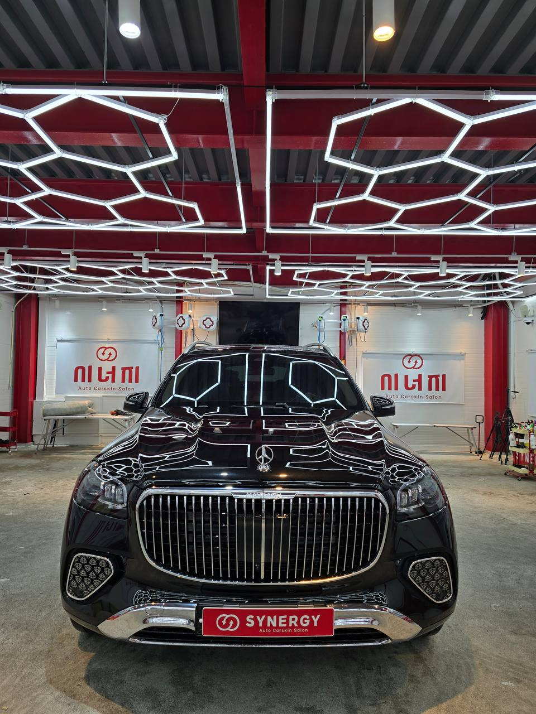
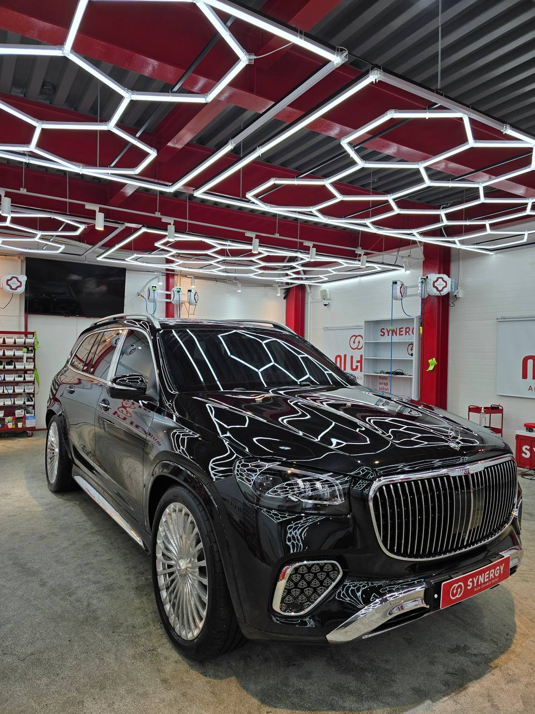
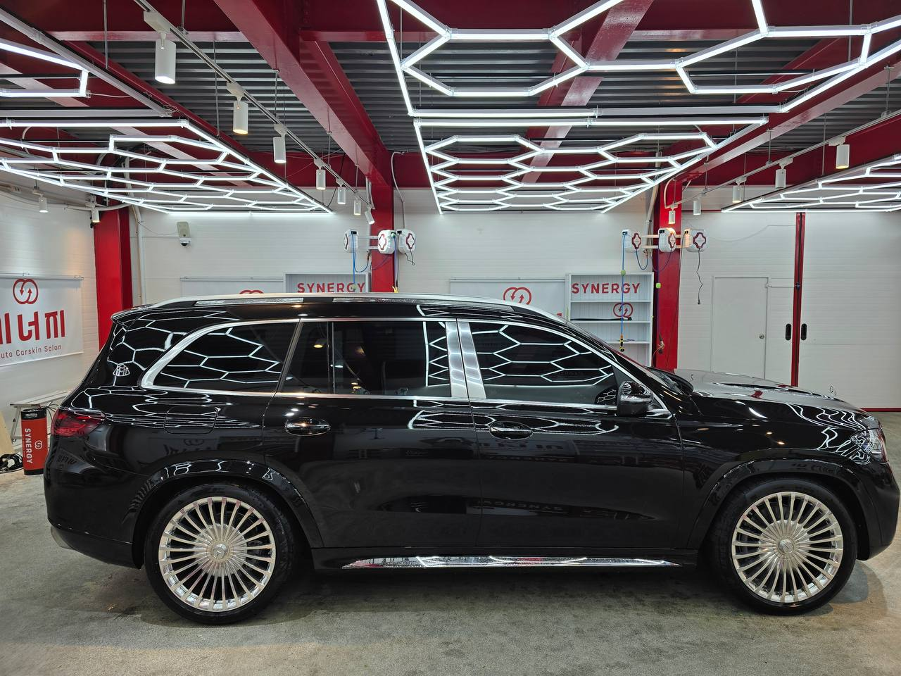
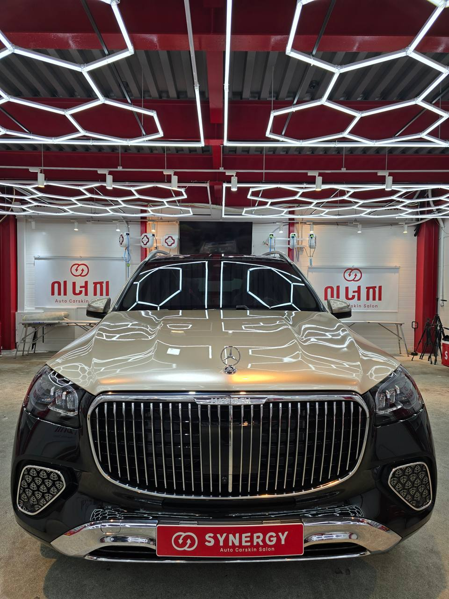
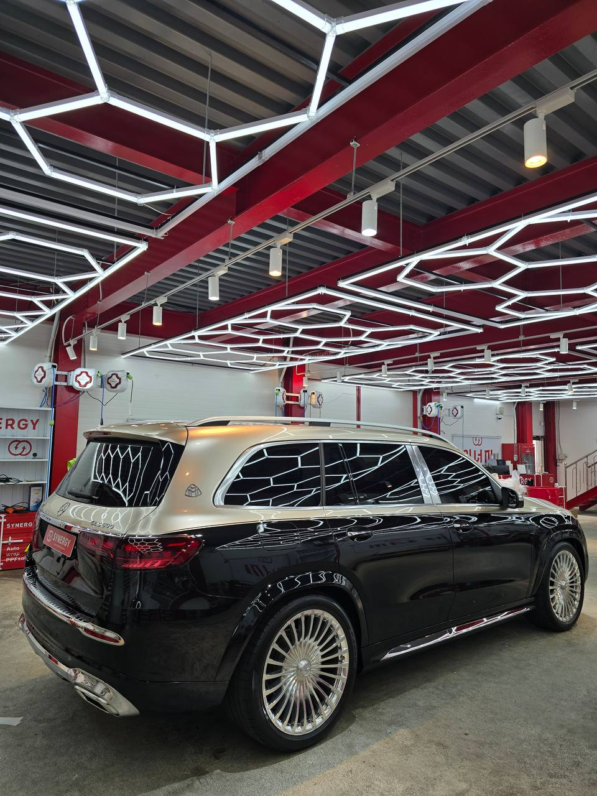
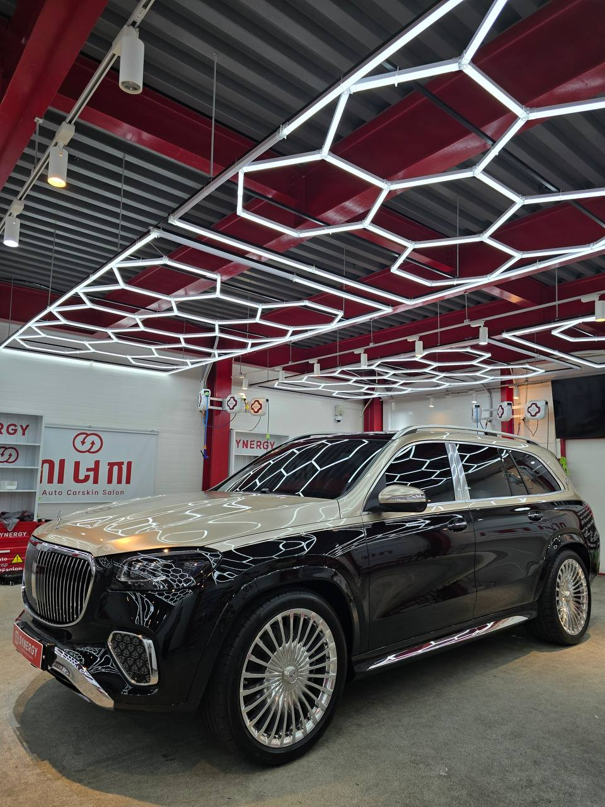

안녕하세요 :)
경기 이천/광주 PPF 랩핑 전문점
시너지 아우토살롱 입니다 !
이번에 입고된 차량은
벤츠 마이바흐 GLS600 입니다.
사실 이런 차량은
아무 데나 맡기기 어려운 거
차주분들이라면 다 공감하실 겁니다.


이번 고객님도 마찬가지였습니다.
여러 업체를 비교해 보시고
필름 종류와 마감 퀄리티까지
꼼꼼히 확인하신 후에
저희 시너지 아우토살롱으로
최종 결정해 주셨습니다.
사실 마이바흐 GLS 정도 되는 차량은
출고가부터가 다른 차원이기 때문에
도장면 하나, 라인 하나에
차주님이 느끼시는 체감 만족도가
완전히 달라집니다.
특히 마이바흐 GLS처럼
거대한 바디에 루프라인이 길게 떨어지고
리어 펜더에서 프론트 범퍼까지
곡면이 이어지는 차량은
작업 경험이 결과물에서
그대로 드러나는 차종입니다.
필름 한 장이 덮는 면적이 넓은 만큼
텐션 하나만 어긋나도
들뜸이나 이질감이 바로 보이거든요.
그래서 저희 이천PPF 잘하는곳
시너지 아우토살롱에선
고객님이 원하시는 기준에 맞춰
필름은 STEK 다이노쉴드로 선택해드리고
차량 상태와 사용 환경까지 고려해서
맞춤 견적과 시공 방향을
잡아드렸습니다.
★ 그래서 저희는
단순 시공이 아니라
차량에 맞는 보호 설계부터
먼저 잡고 들어갑니다.
PPF는 단순한 필름이 아니라
일상에서 생기는 잔기스,
주차장 문콕,
고속 주행 시 돌 튐,
새똥·벌레 등
도장을 공격하는 모든 요소로부터
순정 도장면을 지켜주는
보호 장치입니다.
특히 마이바흐급 차량은
한 번 도장이 상하면
재도장 비용만 수백만원 단위로 나오기 때문에
PPF 시공은 선택이 아니라
필수에 가깝습니다.

작업은
필름 텐션과 도포량을 정밀하게 잡고,
도어 라인·루프라인·리어 펜더까지
핸드컷팅과 최신 재단기를 함께 활용해서
곡면 하나하나에
필름이 완전히 밀착되도록 진행했습니다.
프론트 범퍼와 헤드램프 주변,
휠 아치 라인처럼
필름이 겹치거나 말리기 쉬운 부위는
특히 더 시간을 들여
마감 퀄리티를 잡았습니다.


이천 마이바흐 GLS 유광 전체 PPF,
모든 시공이 끝난 뒤의 모습입니다.
사진으로만 봐도 느껴지지만
도장면 위에 필름이 올라갔다는
이질감 없이
자연스럽게 한 장처럼
밀착된 게 핵심입니다.
유광 PPF 특유의
깊이감 있는 반사광이 살아있고,
루프라인부터 리어까지
한 호흡으로 떨어지는 라인이
그대로 유지됩니다.
